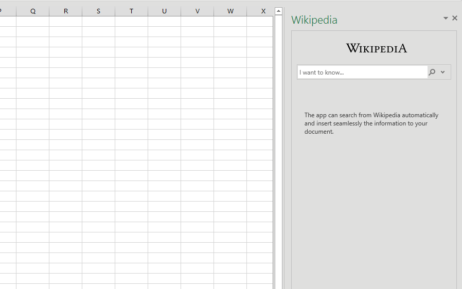
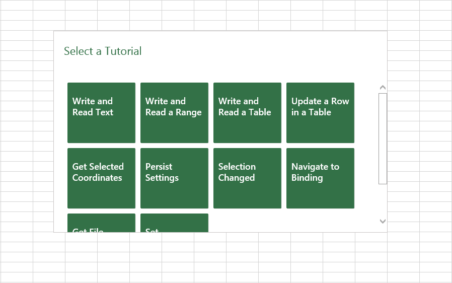

Office Add-Ins (formerly Apps for Office)
An Add-in runs inside an Office application and can interact with the contents of the Office document using our rich JavaScript API.
Office Add-in = manifest.xml + your own web app
Under the hood, it's simply a web app that you can host anywhere. Using a manifest.xml file, you tell us where your web app is located and how you want it to appear. We'll take care of making it show up within Office.
Select the Office app that you wish to build an Add-in for:
Build Your First Add-in
Choose which kind of Add-in you'd like to build.
Task Pane
A Task Pane Add-in appears next to the document.
Start building
Open a sample using an in-browser editor for Add-insDownload
Download a sample from GitHubContent Add-in
A Content Add-in appears in-line with the document
Start building
Open a sample using an in-browser editor for Add-insDownload
Download a sample from GitHubNext Steps
- ReferenceReference documentation for the JavaScript API for Add-ins
- More Code SamplesA list of other useful samples that you can check out to help build your Add-ins
- Training VideosWatch in-depth training videos that show you how to build an Add-in from start to finish
- Deploy Your Add-inLearn about the various methods you can use to deploy and publish your Add-ins
- Design GuidelinesTips and tricks to make your Add-in gorgeous and easy to use.